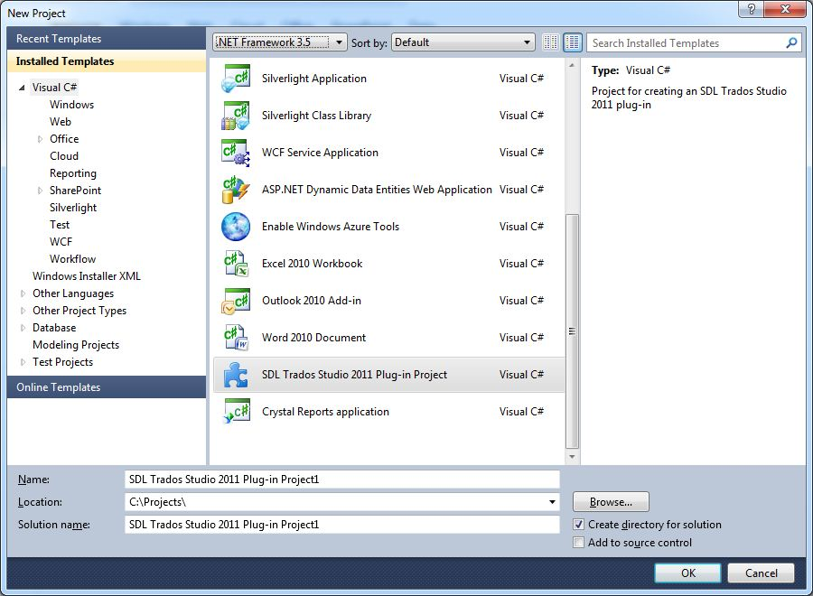

Creating a New Assembly for the Settings UI
Create a separate project for adding a user interface to your file type plug-in.
Create a New Project
To expose runtime configuration options to users, create a separate assembly for the UI. This allows you to build different user interfaces for the same file type plug-in—for example, a desktop UI or a web-based UI.
Consider this scenario: sometimes product code lines need to be locked, and sometimes they require localization. Users should determine this case-by-case for each document. Based on the user's setting in the UI, the file parser locks or exposes product code lines for translation.
Rather than adding UI controls to your existing project, create a second project for the UI assembly. This separation enables flexible UI implementations.
For this plug-in, use the Trados Studio Plug-in Project template.

By default, the project name will be Trados Studio Plug-in Project1. Change it to Sdl.Sdk.FileTypeSupport.Samples.SimpleText.WinUI for this sample.
Add the Required References
The plug-in template includes the Sdl.Core.PluginFramework.dll reference.
Add the following libraries as references to the UI project:
- Sdl.Core.Settings.dll
- Sdl.FileTypeSupport.Framework.Core.Settings.dll
Set the project's output path to the Trados Studio installation folder (for example, C:\Program Files\Trados\Trados Studio\Studio19).
See Also
Note
Remember to generate a key to sign the assembly.
Note
This content may be out-of-date. To check the latest information on this topic, inspect the libraries using the Visual Studio Object Browser.